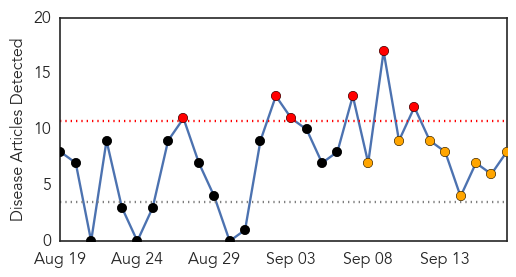
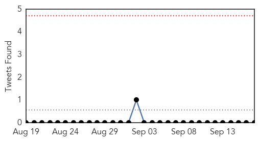
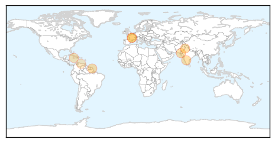
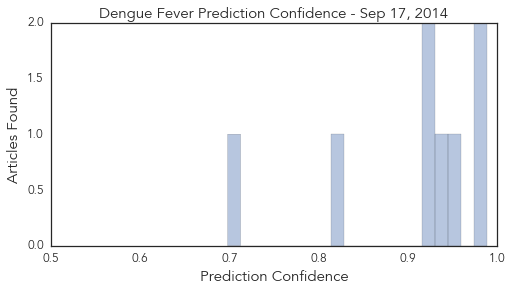
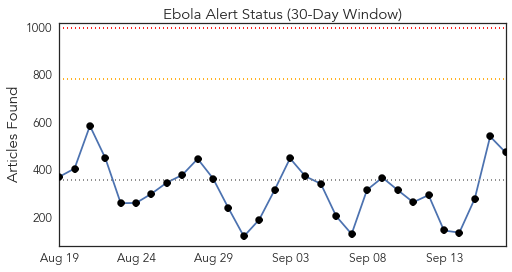
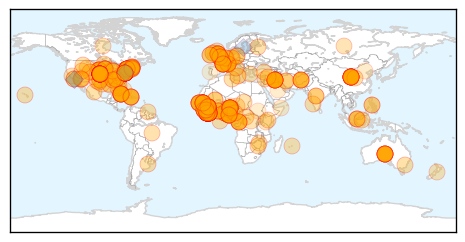
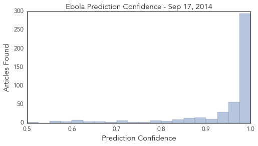

Dengue Fever
30-Day Web Trend
6 alerts, 8 warnings

30-Day Twitter Trend
0 alerts, 0 warnings

Article Locations
Article Confidences
Top Articles:
- 0.988
- Dengue cases climb up in north Karnataka
- 0.980
- "Dengue's Cousin" Makes First Independent Appearance in Brazil
- 0.947
- Breeding grounds: Ferozewala, Muridke high-risk areas for dengue fever
- 0.942
- Another polio case plagues province
- 0.930
- Killer mosquito invasion reaches the UK as bugs travel to Britain from Europe
- 0.929
- Killer mosquito invasion reaches the UK as bugs travel to Britain from Europe
- 0.826
- MP for West Portland speaks on increase in symptoms of chikungunya in Portland
- 0.698
- Venezuela on alert over mysterious, deadly disease
Top Tweets:
-
No tweets found for Sep 17, 2014
Ebola
30-Day Web Trend
0 alerts, 0 warnings

30-Day Twitter Trend
0 alerts, 0 warnings

Article Locations
Article Confidences
Top Articles:
- 1.000
- Liberia president praises US for Ebola help pledge
- 1.000
- French MSF Medical Worker Contracts Ebola
- 1.000
- 3,000 U.S. Troops To Fight Ebola
- 1.000
- Ebola Spreads, Several New Patients Brought to US.
- 1.000
- Recklessly Scaring Liberians Into Mistrusting Health Workers
- 1.000
- Ebola: seven things that need to be done to tackle the outbreak
- 1.000
- US troops dispatched to fight Ebola will find an epidemic out of control, UN says
- 1.000
- Ebola outbreak hits home with Bay Area health specialists
- 1.000
- Ebola virus: What WHO is scare of saying about the deadly disease
- 1.000
- Liberia president praises U.S. for Ebola help pledge
- 1.000
- FACT SHEET: U.S. Response to the Ebola Epidemic in West Africa
- 1.000
- WHO: $1 Billion Needed to Contain Ebola Outbreak
- 1.000
- Doctors Without Borders staffer infected with Ebola in Liberia
- 1.000
- Ebola outbreak: Obama says epidemic 'spiralling out of control', as Australia pledges £3.9m
- 1.000
- Ebola outbreak: Black market for blood of survivors emerging as virus spreads
- 1.000
- Ebola outbreak: Survivor William Pooley is flown to US to give doctor with virus emergency blood transfusion
- 1.000
- Is Ebola Coming To The US? Outbreak In West Africa Is A ‘Global Threat,’ Says Obama
- 1.000
- CDC Urges Facilities To Use Ebola Prevention Checklist
- 1.000
- Ebola cases could double every three weeks
- 1.000
- Liberia president praises US for Ebola help pledge
- 1.000
- Is it Wise for Obama to Send Thousands of U.S. Troops into the Ebola Death Zone?
- 1.000
- British Ebola survivor flies to the US bedside of friend battling the deadly virus for potentially life-saving blood transfusion
- 1.000
- Pictured: First British healthy volunteer to be injected with experimental Ebola vaccine designed to fight deadly virus
- 1.000
- Ebola outbreak: Why the U.S. is taking the lead
- 1.000
- U.S. hospitals focus on preparedness, protective equipment as risk of Ebola spread increases
- 1.000
- US Official Tries to Allay Fear Ebola Could Become Airborne
- 1.000
- Liberia president praises US for Ebola help pledge
- 1.000
- Nigerian isolated in Vietnamese hospital over Ebola concerns
- 1.000
- Sahara Reporters
- 1.000
- Fact Sheet: CDC Ebola Surge – 2014 - Sierra Leone
- 1.000
- More Than You Ever Wanted to Know on the Technical Side
- 1.000
- Liberia president praises U.S. for Ebola help pledge
- 1.000
- Nigerian News from Leadership News
- 0.999
- What can we say about Ebola? (without starting a panic or making everyone mad)
- 0.999
- Ebola: First French victim to be flown home from Liberia
- 0.999
- US Escalates Ebola Battle With 3,000 Troops
- 0.999
- HRW West Africa: Respect Rights in Ebola Response
- 0.999
- Suspected Ebola case ruled out in Lithuania
- 0.999
- ‘Send Aussie doctors to fight Ebola’
- 0.999
- Which contagious diseases are the deadliest?
- 0.999
- $1b Ebola fight seen as U.S. pledges 3,000 troops
- 0.999
- Nearly $1 billion needed now to stop Ebola
- 0.999
- U.S. leaders call for ‘war’ on Ebola outbreak
- 0.999
- First French Ebola victim to be flown home from Liberia
- 0.999
- Obama sends troops to West Africa to contain Ebola
- 0.999
- Obama to Step Up Aid to Fight Ebola in West Africa
- 0.999
- Obama's Ebola response: Is it enough and in time?
- 0.999
- Ebola situation is ‘worse than war’, say Liberians - Liberia
- 0.999
- Ebola fight will cost $1 Billion – UN
- 0.999
- UN Security Council to meet over heightened Ebola response
Showing top 50 articles...
Top Tweets:
- 0.954
- The Red Cross Ebola Treatment Centre in Kenema is now functional and has started admitting Ebola Confirmed Cases endebolanow ebola
- 0.710
- RT: WHO welcomes the contribution from the United States to significantly build upon their previous Ebola response in West Africa
- 0.583
- RT: Breaking news: A French (Doctors Without Borders) worker contracts Ebola in Monrovia Liberia. Will be evacuated to F…
- 0.583
- RT: Breaking news: A French (Doctors Without Borders) worker contracts Ebola in Monrovia Liberia. Will be evacuated to F…